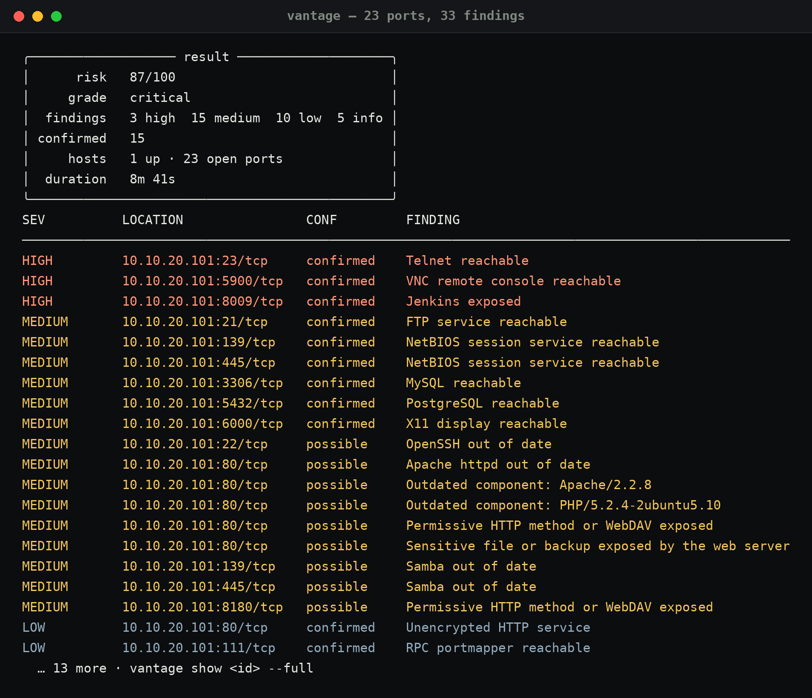
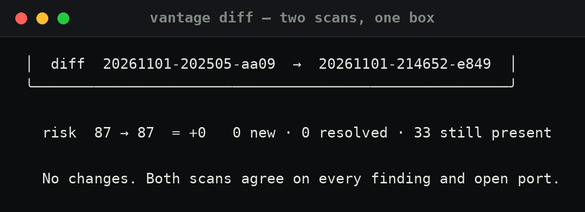

0121:40 — Rules before anything
Vantage refuses to scan without a scope file and an explicit statement. That is not decoration: it writes what it decided to the audit log, including refusals. The scope for this run is one address.
$ cat ~/lab/scope.json
{
"name": "lab",
"networks": ["10.10.20.101/32"],
"created": "2026-11-01T20:25:02",
"fingerprint": "e9432918c4819abe"
}
$ vantage audit --tail 4
2026-11-01T18:09:00 authorized 127.0.0.1 implicit:127.0.0.1
2026-11-01T19:07:08 authorized 10.10.10.0/24 implicit:10.10.10.0/24
2026-11-01T20:25:05 authorized 10.10.20.101 lab
2026-11-01T21:46:52 authorized 10.10.20.101 lab
The fingerprint is the part I care about: it is a hash of the scope contents, so "I scanned it with that scope" is a claim with evidence behind it.
0221:46 — The scan
$ vantage scan 10.10.20.101 --scope ~/lab/scope.json --authorized -p standard scope lab · 10.10.20.101/32 · ~1 address(es) operator nox · authorised · fingerprint e9432918c4819abe strategy standard · Standard assessment phases top 1000 TCP · versions · NSE vuln · web · TLS ▸ 1/6 Port scan ✓ 23 port(s) on 1 host(s) ▸ 2/6 Service & version detection ✓ banners collected ▸ 3/6 Vulnerability scripts (NSE) ✓ NSE checks complete ▸ 4/6 Web surface review ✓ 2 endpoint(s) ▸ 5/6 TLS inspection ✓ no TLS endpoints found ▸ 6/6 Analysis ✓ 33 finding(s)

Three things surprised me and one thing did not. The telnet port is open, obviously. VNC is open with no visible auth story. Jenkins sits on 8009 through the AJP connector, which nmap does not call Jenkins — it calls it ajp13, and the exposure table is what turns that into "Jenkins exposed". What did not surprise me is the score: 87/100, grade critical. On a box like this that is the correct answer, and a tool that returned "medium" would be lying.
0321:56 — Reading 33 findings without drowning
The table is the least interesting output. What matters is the confidence column, because it decides what I go and check by hand:
HIGH 10.10.20.101:23/tcp confirmed Telnet reachable HIGH 10.10.20.101:5900/tcp confirmed VNC remote console reachable HIGH 10.10.20.101:8009/tcp confirmed Jenkins exposed MEDIUM 10.10.20.101:21/tcp confirmed FTP service reachable MEDIUM 10.10.20.101:445/tcp confirmed NetBIOS session service reachable MEDIUM 10.10.20.101:5432/tcp confirmed PostgreSQL reachable MEDIUM 10.10.20.101:22/tcp possible OpenSSH out of date MEDIUM 10.10.20.101:80/tcp possible Outdated component: Apache/2.2.8 MEDIUM 10.10.20.101:80/tcp possible Outdated component: PHP/5.2.4-2ubuntu5.10 LOW 10.10.20.101:80/tcp confirmed Unencrypted HTTP service
Fifteen are confirmed: a port answered, or a service named itself.
Eighteen are possible, which is the honest label for "the banner
says 2.2.8 and the banner could be lying". Apache 2.2.8 from 2008 is not lying,
but the tool does not get to assume that.
0422:00 — The versions are the real finding
"FTP service reachable" is a medium. "vsftpd 2.3.4" is a backdoor. Bastet looks up what NVD says about a version, from the cache when the network is not there:
$ bastet cve CVE-2011-2523 ╭─────────────────────────────────────────────────────────╮ │ severity CRITICAL │ │ cvss 9.8 │ │ published 2011-07-03 │ ╰─────────────────────────────────────────────────────────╯ vsftpd 2.3.4 downloaded between 20110630 and 20110703 contains a backdoor which opens a shell on port 6200/tcp.
And the offline exploit database agrees with the scanner's version banner:
$ searchsploit vsftpd 2.3.4 vsftpd 2.3.4 - Backdoor Command Execution unix/remote/49757.py vsftpd 2.3.4 - Backdoor Command Execution (Metasploit) unix/remote/17491.rb
Same story for the other two versions worth looking at: Samba 3.0.20 is CVE-2017-7494 (SambaCry, 9.8) and anything with Bash from that era is CVE-2014-6271 (Shellshock, 9.8). Three nines out of ten from three services that the scan called "medium" because it only knew they were reachable.
0522:10 — A second opinion, and a disagreement worth having
I installed nuclei while I was at it (v3.11.1, templates on first run) and pointed the critical/high severity set at the same box. It found things Vantage did not, and the reason is worth writing down:
$ nuclei -u http://10.10.20.101 -severity critical,high -silent [CVE-2012-1823] [http] [high] http://10.10.20.101/index.php?-d allow_url_include=on ... [pgsql-empty-password] [javascript] [critical] 10.10.20.101:5432 [pgsql-default-db] [javascript] [high] 10.10.20.101:5432 [password="postgres"] [vnc-default-login] [javascript] [high] 10.10.20.101:5900 [password="password"] [CVE-2004-2687] [tcp] [high] 10.10.20.101:3632 [ftp-weak-credentials] [tcp] [high] 10.10.20.101:21 [username="ftp", password="123456"]
Vantage grades exposure and versions. Nuclei tries templates, and some of those templates log in with known default credentials — which is exactly how it turns "PostgreSQL reachable" into "PostgreSQL with an empty postgres password". Two different tools, two different kinds of evidence, and neither is wrong.
That distinction is also the one that needs a sentence in a scope document: connecting is not the same as authenticating, and a template that guesses a password is a real login attempt. On this box that is the whole point. On anyone else's network it needs to be written down before it runs.
0622:14 — What access existed, and what was never used
Worth being precise about, because "I got in" is a claim that should come with evidence. Nothing was exploited here: no shell, no session, no login typed by hand. What the tools did confirm is that four services would have accepted one.
service would have accepted found by VNC 5900 password, password123 nuclei vnc-default-login PostgreSQL 5432 empty password, postgres:postgres nuclei pgsql-empty-password FTP 21 ftp:123456 nuclei ftp-weak-credentials PHP 5.2.4 CGI CVE-2012-1823 (arg injection) nuclei template, probe only
Documented and deliberately not touched: the vsftpd 2.3.4 backdoor on 21/tcp that opens a shell on port 6200 (CVE-2011-2523), distccd on 3632 (CVE-2004-2687), Samba 3.0.20 (CVE-2017-7494) and Shellshock (CVE-2014-6271). Any of them would have given a shell on a box that was never meant to be hard.
The honest conclusion is the useful part: on this machine you do not need an exploit. Three services accept a guessable credential and one is enough for complete compromise — the famous CVEs are decoration. It is also exactly the gap between my two tools: Vantage reported no critical because it grades exposure and versions, nuclei reported two because it tried the credentials. A report with only one of those is an incomplete picture of the same box.
0722:15 — Two scans, forty minutes apart

A box that never changes is how you test a scanner. Same 33 findings, same 23 ports, same risk score. If a second run had invented a new finding, I would have a determinism bug to fix before I trusted anything else it said.
0822:20 — Between scans, something has to watch
A scan is a photograph. Warden is the part that runs when I am not looking: one TOML file says what should be up, and it checks over TCP, UDP, HTTP and TLS.
$ warden check 16 services · 13 ok · 1 warn · 2 fail 4.0s SERVICE STATUS LATENCY DETAIL firewall-http :80 ✓ ok 7 ms HTTP 301 in 7 ms (5 redirects) gateway-dns :53 ✗ fail 4003 ms no reply within 4s gateway-ntp :123 ✓ ok 1 ms replied in 1 ms (48 bytes) gateway-snmp :161 ! warn 4003 ms no reply — normal for many UDP services target-ftp :21 ✓ ok 2 ms connected in 2 ms target-http :80 ✓ ok 10 ms HTTP 200 in 10 ms target-ntp :123 ✗ fail — the host answered with ICMP port unreachable target-vnc :5900 ✓ ok 0 ms connected in 0 ms
Three different readings of "no answer", and this table is where I learned to care about the difference. The gateway answers NTP with 48 bytes. It drops SNMP silently — warn, because silence proves nothing. Metasploitable has no NTP and says so with an ICMP port-unreachable, which is a real failure. And the gateway's DNS does not answer a valid query at all, which is a fail: a resolver is supposed to answer.
$ warden digest --days 1
flapping — answered some of the time
portfolio: 5 ok, 1 fail of 6
portfolio-tls: 5 ok, 1 fail of 6
The flapping entry is my own doing: I restarted the portfolio container while testing and Warden caught it. That is the whole value of keeping history — a status table would have said "fine" thirty seconds later.
0922:25 — The write-up, while I still remember it
Notes go in as the work happens, not after. Bastet keeps them in a case with a timeline, and exports markdown for the ticket or the vault:
$ bastet case show IR-2026-0002 IR-2026-0002 Metasploitable 2 — recon, triage and monitoring severity high status open ttps T1595, T1190, T1210, T1046 21:47 log Warden baseline: 16 services, 13 ok, 1 warn, 2 fail 21:47 finding CVE triage: CVE-2011-2523, CVE-2017-7494, CVE-2014-6271 — all 9.8 21:55 log Scan 20261101-214652-e849: 23 ports, 33 findings, 87/100, 8m41s 21:55 decision Nothing needs containment. Training target, isolated, no route out.
10What this actually showed
- The tools agree with each other. Two scans, same result; the checker and the scanner describe the same box from different angles.
- Exposure grading is not vulnerability grading. Vantage found no critical because nothing confirmed a vulnerability. Nuclei found two by trying default credentials. Both are true statements about the same machine.
- Confidence is the column that saves time. Fifteen confirmed findings and eighteen maybes means I know exactly what to verify by hand.
- The write-up is the deliverable. The case file above took four commands while the scan was still running.